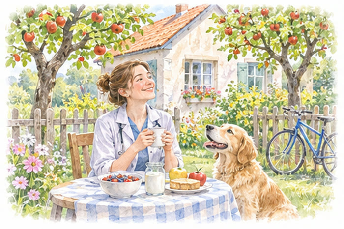

Listen to the text
Speed:

Our English teacher gave us a task: "Describe an ordinary day of your life in fifteen years. Not what you will have. How you will live." Here is what I wrote. I am twenty-nine. I wake up at half past six without an alarm, because I went to bed on time. I am not a sleepyhead any more. Miracles happen. I live in a small house not far from a city. It is not big, but it has a garden with two apple trees and a table under them. In the morning I go for a run along the river with my dog. Then I have breakfast outside if the weather is fine. I work as a vet. My clinic is fifteen minutes away by bike. I love my job. Every day is different: a cat that has eaten a sock, a parrot that has stopped talking, a frightened puppy. I am tired in the evening, but it is a good kind of tired. I don't overwork. I finish at five. Twice a week I play volleyball with my friends from school. Yes, we still keep in touch. On other days I cook dinner. I can cook real food, not only sandwiches. In the evening my parents often come round. We drink tea in the garden and talk. My phone is somewhere in the house. I am not sure where. I am not rich or famous. But I am healthy, I do what I love, and the people I love are near. My teacher wrote: "Look at your list again. Sleep, sport, friends, family, a job you love. You can start building this life today."
Tap any sentence to hear it again.
Сподобалось? На сайті ще більше матеріалів для вчителів!
Reader, презентації, ігри, діагностичні та контрольні роботи до підручників 1-11 класів.
Перейти на сайт materials.allaenglish.com